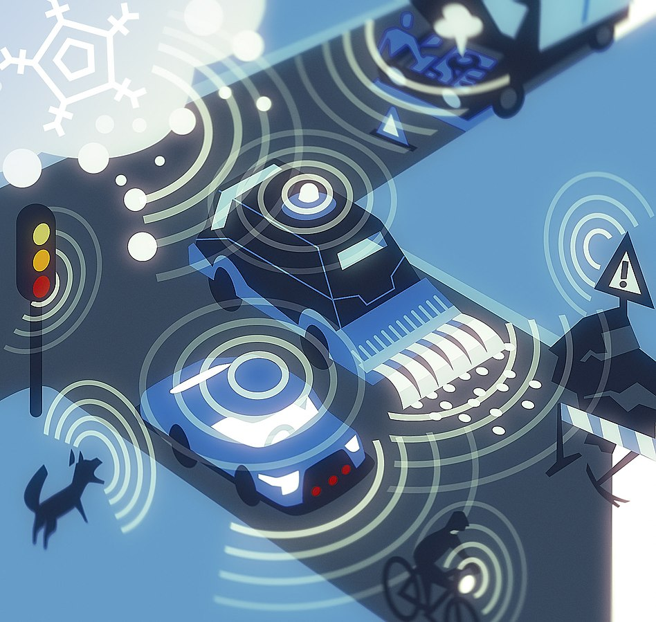
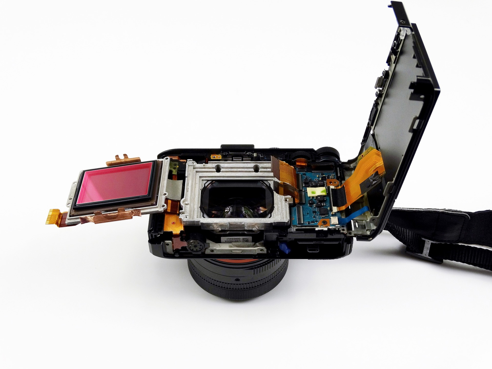

Key Technologies
V2V Communication
Vehicle-to-Vehicle (V2V) communication is the backbone of the Smart Navigation System. Using protocols such as DSRC (Dedicated Short Range Communication) or C-V2X (Cellular Vehicle-to-Everything), vehicles exchange data in real time. This enables a synchronized flow of information, such as:
-
Vehicle speed and trajectory to predict potential collisions.
Road conditions, such as slippery surfaces or construction zones.
Alerts for emergency braking or sudden stops ahead.
The low latency of DSRC and the wide coverage of C-V2X ensure that information is transmitted almost instantaneously, making it possible for vehicles to respond to hazards within milliseconds.
Dynamic Traffic Analysis
Traffic patterns are inherently dynamic and unpredictable. Dynamic Traffic Analysis employs AI-powered predictive models to process massive datasets in real time. By analyzing data from V2V communication, GPS systems, and urban traffic infrastructure, the system can:
-
Predict congestion before it occurs, allowing vehicles to reroute proactively.
Identify optimal travel speeds to minimize fuel consumption and emissions.
Integrate external factors like weather patterns and accident reports.
For example, if a bottleneck is detected ahead, the system suggests alternative routes to nearby vehicles. This reduces overall congestion and ensures smoother travel for everyone.

Sensor Fusion
Sensor Fusion refers to the process of combining data from multiple sources—such as LiDAR, cameras, radar, and GPS—to create a holistic understanding of the vehicle’s surroundings. Each sensor type offers unique capabilities:
-
LiDAR: Provides high-resolution 3D mapping of the environment.
Radar: Detects objects and measures their speed, even in adverse weather.
Cameras: Recognize traffic signs, lane markings, and pedestrians.
The fusion of these data streams eliminates blind spots and enhances the reliability of decision-making processes in autonomous navigation.
